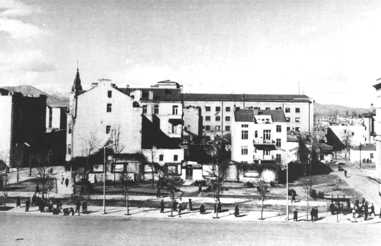
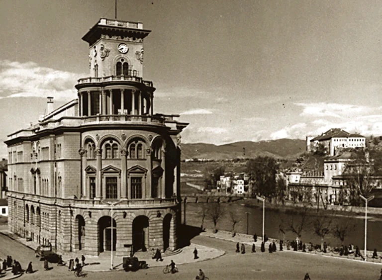
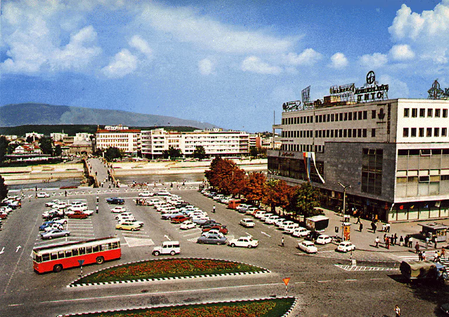
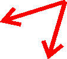
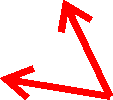

Celebration - the square
- Screenplay
- Aco Petrovski and Aki Pavlovski
- Director
- Trajče Popov
- Cameraman
- Kiro Bilbilovski and Trajče Popov
- Year
- 1949
- Length
- 00:19

The square of the city of Skopje, photographed around the middle of the 19th century.

Skopje at the end of the 19th century. The square with the Burmali Mosque and a few buildings around it. An unformed street. A gathering place for carters with ox carts carrying trade goods.

The square at the end of the 19th and beginning of the 20th century. In the foreground is a stand for horse cabs and carts. On the right, two rows of buildings stretch right up to the Stone Bridge. Behind them is the Burmali Mosque. To its left are houses, and right behind them part of the bank can be seen. In the background rises the Skopje fortress - Kale with the barracks.

The square at the end of the 19th and beginning of the 20th century. In the foreground is a stand for horse cabs and carts. On the right, two rows of buildings stretch right up to the Stone Bridge; they housed merchants' and craftsmen's shops. To their left is the Burmali Mosque, with houses built next to it. In the background rises the Skopje fortress - Kale with the barracks.

Skopje during the Balkan Wars. The Burmali Mosque with a horse-cab stand. To its right are the buildings on both sides of the entrance to the Stone Bridge, which housed merchants' shops and craftsmen. In the foreground are shoeshiners and soldiers. The street has open channels for rainwater.

Part of the square in front of the Stone Bridge (during the Balkan War). The streets are not yet paved. The building on the left is one of those built in two rows in front of the Stone Bridge, housing merchants' and craftsmen's shops. They were demolished around 1920.

Skopje, around 1920. Part of the city square in front of the Stone Bridge. The first kiosks for passers-by and sales, with distinctive architectural details, especially their roofs. The bridge has been widened with pedestrian walkways.

Skopje, around 1920. A landscaped city square: a walled green square, paved surfaces, pavements with kerbs. A prominent approach to the Stone Bridge with open views of the river and the city fortress. Citizens and horse cabs, the public transport of the time, bustle about.

Skopje, around 1920. A landscaped city square: a walled green square, paved surfaces, pavements with kerbs. A prominent approach to the Stone Bridge with open views of the river and the city fortress. Citizens and horse cabs, the public transport of the time, bustle about.

Skopje after the First World War, as the city square begins to be laid out. The buildings behind the Burmali Mosque, in front of the Stone Bridge, have been demolished. The bridge has a new railing on the walkways. In the background is part of the Pajko quarter, on the left bank of the Vardar.

Skopje just after the First World War. The city square before the Ristić Palace was built: a broken-up fabric of traditional architecture. Straight ahead is the main street leading to the railway station of the time. Half-way up on the left is today's "11 October" Street.

Skopje, the 1920s. The city square from the south, with part of the Ristić Palace on the right. On the left are the hotel "Sarajevo", the hotel "Obedinuvanje" and the "Marger" café. Many new buildings and shops along the main street.

The square, the 1920s. In the foreground is the horse-cab stand (in front of the Officers' Club), and the background is dominated by the building of the pharmacist Ristić, popularly called the Ristić Palace.

Skopje around 1930. The city square from the south, with the Ristić Palace and the timber yard in the foreground. Many new buildings and shops along the main street.

Skopje, around 1930. Part of the city square with the Ristić Palace. On the right is the fence of the timber yard, where building materials were sold.

Aerial photograph of Macedonia Square. (the 1920s)

Part of the square with the Ristić Palace (the 1930s)

Part of the square and the Ristić Palace. Bottom left is a covered platform for the military band, which played on Sundays and holidays. Far right in the distance is the "Balkan" mill. (the 1930s)

Skopje around 1930. The city square with the Ristić Palace and the timber yard in the foreground. Many new buildings and shops along the main street.

Skopje around 1930. The city square from the south after the Ristić Palace was built, with the timber yard in the foreground. Many new buildings and shops along the main street.

Skopje around 1930. Part of the square from the south, after the Ristić Palace was built, with the timber yard in the foreground and the main street towards the railway station lined with buildings and shops.

Part of the square, with the Officers' Club in the background
- the 1920s.

The square around 1927. The southern approach to the Stone Bridge. Behind on the left are the National Theatre and the Skopje fortress - Kale.

The square around 1927. The southern approach to the Stone Bridge. In the foreground is the cinema terrace, where films were shown in summer.

Skopje, around 1925. Part of the city square in front of the Stone Bridge. The first kiosks for passers-by and sales, with distinctive architectural details, especially their roofs. The bridge has been widened with pedestrian walkways. In the background on the left are the National Theatre and the Skopje fortress - Kale. In the foreground the cinema terrace is being demolished; the National Bank was built in its place.

The square around 1926. A landscaped city square: a walled green square, paved surfaces, pavements with kerbs. Next to the green square was a horse-cab stand, and right next to it parking for cars and taxis. On the right are restaurants and hotels. Straight ahead is the Stone Bridge with part of the Jewish and Pajko quarters. On the left of the photograph is the Officers' Club under construction.

The square, second half of the 1920s. A landscaped city square: a walled green square, paved surfaces, pavements with kerbs. Next to the green square was a horse-cab stand. On the right are restaurants and hotels. On the left is the Officers' Club, still under construction. In the background is the Stone Bridge with part of the Jewish and Pajko quarters.

The square of the city of Skopje - the 1920s. In front of the Officers' Club was a taxi rank for motor cars, but horse cabs were still used by the citizens.

The whole square - end of the 1920s. In front of the Officers' Club was a taxi rank for motor cars, but horse cabs were still used as public transport by the citizens.

The square with the hotel "Sarajevo" and the popular "Marger" café, a favourite place of the people of Skopje. To the left of the hotel "Sarajevo" was the hotel "Obedinuvanje". In the foreground, on the pavement, sits a pretzel seller. (around 1935)

The square with the hotel "Sarajevo" and the popular "Marger" café, a favourite place of the people of Skopje. To the left of the hotel "Sarajevo" was the hotel "Obedinuvanje". On the left is the southern approach to the Stone Bridge - the 1920s.

The square with the National Bank, the Chamber of Commerce under construction and part of the Pajko quarter with the Ottoman Bank. In front of the Chamber of Commerce are the hotels and the "Marger" café (before they were demolished). (the 1930s)

Part of the square with the monuments that stood at the southern entrance to the Stone Bridge. - the 1930s

Part of the square towards the Stone Bridge. At the entrance to the bridge, on two tall marble pedestals, stand two horsemen (by the sculptor Antun Augustinčić). A fountain was also built on the square. On the left are the National Theatre, the Skopje fortress - Kale and part of the Jewish quarter. (around 1930)

Part of the square with the National Bank and the Chamber of Commerce. (the 1930s)

The square of the city of Skopje, the 1950s, with the old post office in the background and the Natural History Museum on the left.

The square, the 1950s. The first building on the left is the one known as "Macura", which housed the central pharmacy and other shops. In the background are the Officers' Club, the National Bank and the Stone Bridge. In the foreground, where the timber yard used to be, is a nicely landscaped park.

The square of the city of Skopje, the 1950s, with the hotel "Makedonija" on the left.

The square in the 1950s.

The square in the 1950s.

Part of the square with the Officers' Club, with the National Theatre and the Skopje fortress - Kale in the background. (the 1950s)

Part of the square towards the Stone Bridge. On the left is the Officers' Club, on the right the National Bank and the Chamber of Commerce. City buses (single- and double-deckers), with their first and last stop on the square. (the 1950s)

The square of the city of Skopje around 1950. On the left is the Officers' Club, on the right the National Bank with the Chamber of Commerce. Between them is the Stone Bridge, and on the other side are the bank buildings and Ibni Pajko.

The square - the 1950s

The square, the 1970s. View towards the Stone Bridge, the "Ibni Pajko" building and the bank complex. In those years the square was used as a car park.

Part of the square, the 1970s, with the Ristić Palace and the buildings along "Goce Delčev" Street.







 Aqueduct4 postcards
Aqueduct4 postcards Kale30 postcards
Kale30 postcards Bridges60 postcards
Bridges60 postcards Quay58 postcards
Quay58 postcards Square46 postcards
Square46 postcards Buildings66 postcards
Buildings66 postcards Christian churches19 postcards
Christian churches19 postcards Muslim buildings33 postcards
Muslim buildings33 postcards Officers' Club29 postcards
Officers' Club29 postcards Theatre28 postcards
Theatre28 postcards Railway station13 postcards
Railway station13 postcards Schools36 postcards
Schools36 postcards Parks12 postcards
Parks12 postcards Markets18 postcards
Markets18 postcards Streets38 postcards
Streets38 postcards Panorama I60 postcards
Panorama I60 postcards Panorama II30 postcards
Panorama II30 postcards Collages55 postcards
Collages55 postcards Floods9 postcards
Floods9 postcards Earthquake27 postcards
Earthquake27 postcards Skopje 200026 postcards
Skopje 200026 postcards